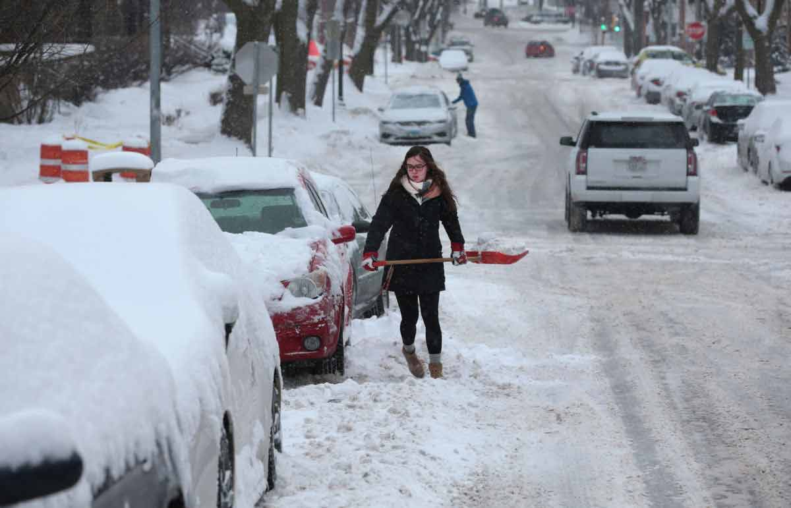
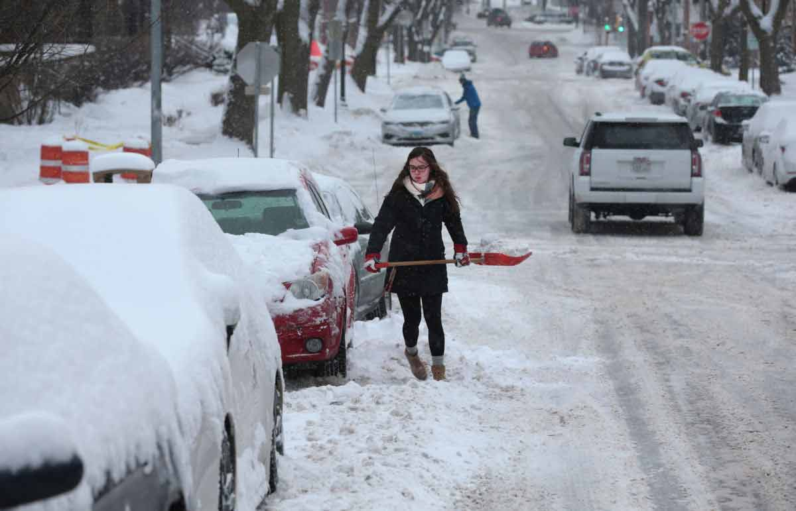

Franklin Prepares for More Snow
 Some areas of Franklin had a further 2 feet of snow overnight on top of accumulations as deep as 5 feet from earlier in the week.

High: 24 ℉
Low: 15 ℉

Precipitation: 15%
Wind Speed: 5 mpg SW
| Day 1 | Day 2 | Day 3 | Day 4 | Day 5 | Day 6 | Day 7 | Day 8 | Day 9 | Day 10 |
|---|---|---|---|---|---|---|---|---|---|
| 20°F | 24°F | 19°F | 21°F | 32°F | 35°F | 40°F | 37°F | 23°F | 20°F |
 Some areas of Franklin had a further 2 feet of snow overnight on top of accumulations as deep as 5 feet from earlier in the week.